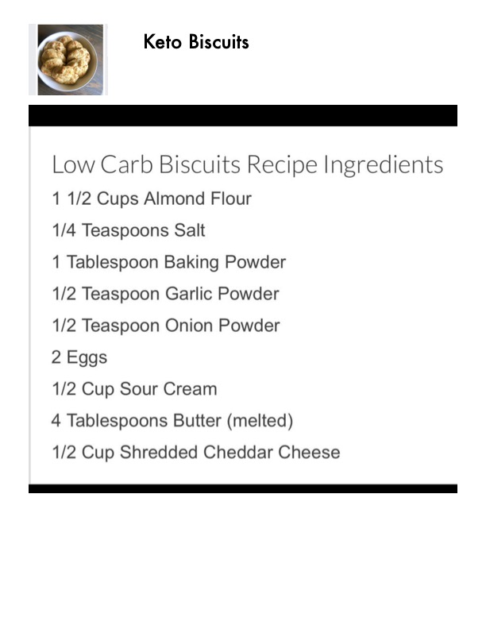

Keto Biscuits

Original cookbook page 7
Low carb biscuits made with almond flour and cheddar cheese — a keto-friendly alternative to traditional biscuits.
Ingredients
- 1 1/2 cups almond flour
- 1/4 teaspoon salt
- 1 tablespoon baking powder
- 1/2 teaspoon garlic powder
- 1/2 teaspoon onion powder
- 2 eggs
- 1/2 cup sour cream
- 4 tablespoons butter (melted)
- 1/2 cup shredded cheddar cheese
Instructions
- Preheat oven to 350°F. Line a baking sheet with parchment paper.
- In a large bowl, whisk together almond flour, salt, baking powder, garlic powder, and onion powder.
- In a separate bowl, mix together eggs, sour cream, and melted butter.
- Combine wet and dry ingredients and stir until well mixed.
- Fold in the shredded cheddar cheese.
- Scoop dough into rounds and place on prepared baking sheet.
- Bake 20-25 minutes or until golden brown on top.
- Allow to cool slightly before serving.
Recipe #7 from collection